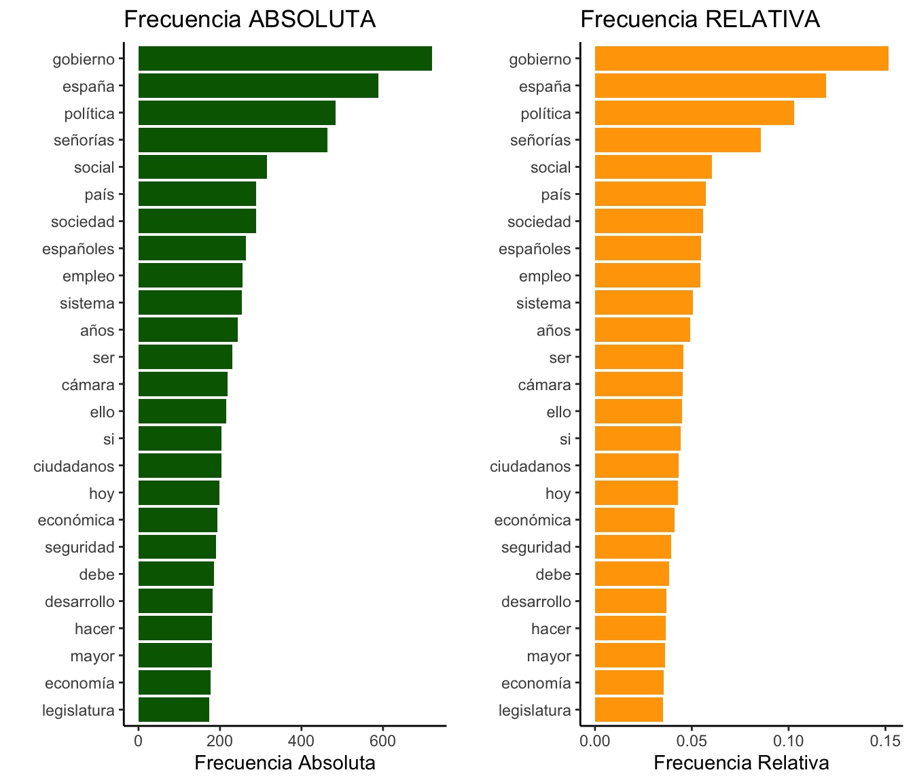
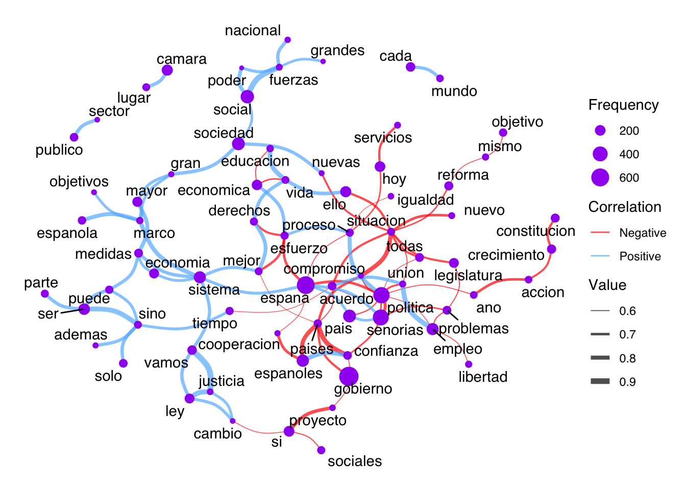

Creación de un corpus y exploración inductiva de textos
En primer lugar existió el Caos. Hesíodo, Teogonía
Canje del fuego son las cosas todas, y de todas las cosas, el fuego, igual que las mercancías lo son del oro y el oro de las mercancías. Heráclito, Fragmento 54
2.1 Introducción
La Teogonía de Hesíodo describe el paso del Caos -el estado de desorden originario- hacia un orden divino por medio de un catálogo de nacimientos y creación de diferentes dioses y seres mitológicos. Los filósofos presocráticos, por otra parte, intentaban explicar el origen del mundo a partir de un principio ordenador fundamental (ἀρχή), una idea clave a partir de la cuál se derivaba todo lo demás. En la primera visión, el mundo se delinea a partir de una serie de eventos sucesivos y caprichos de los dioses en su lucha por protagonismo. No existe un principio claro, sino que tal empresa depende de actos de voluntad, poder y negociación entre los participantes. En la segunda, existe una ley inexorable que estructura nuestra realidad y cabe al pensador desvelarla por medio de la razón.
En lo que tange al análisis de textos también podemos encontrar dos acercamientos análogos. Uno puede adentrar en sus “misterios” desproveído de nociones anteriores y explorar los patrones y estructuras que puedan emerger sin el auxilio de guías previos que orienten tal aventura. El otro modo consiste en tener un norte claro desde el principio y emplear nociones e hipótesis como lentes que orientan el examen de los documentos. Al primero lo llamamos inductivo y al segundo deductivo.
Cada una de esas maneras de mirar hacia los textos subraya una forma alternativa de aprender. El método inductivo conduce a un viaje errante, sin destino cierto, pero plagado de sorpresas y nuevos descubrimientos. El deductivo, por su parte, supone un destino y un rumbo a la vista, permite pocos desvíos. Aunque esté abierto a la serendipia, los principios de partida y los objetivos suelen ser definidos de antemano.
Se consideran antagónicos solamente bajo sus formas típicas o ideales. En el trabajo de análisis, sin embargo, resulta muy poco frecuente examinar cualquier documento sin nociones previas o al menos cierta intuición de qué se podría encontrar. Tampoco abundan trabajos que germinan provistos de un catálogo meticuloso de los instrumentos adecuados y rutas correctas hacia los objetivos. La ciencia es una labor errante. Conocer a partir de textos es un proceso iterativo, que supone múltiples acercamientos sucesivos, idas y venidas constantes. La combinación de ambos acercamientos, aunque predomine uno de ellos, resulta inevitable.
Esta parte del trabajo se centra en algunas estrategias inductivas para el análisis de textos. Se ha decidido solamente emplear aquí métodos que no requieran la lectura previa de los textos por dos razones. La primera es didáctica y evitar confundir tales métodos con otros de carácter deductivo. La segunda, igualmente importante, consiste en señalar la utilidad del método inductivo para la generación de hipótesis, desarrollo de diccionarios e identificación de temas en corpus formados por un elevado número de documentos. Se trata de una combinación entre una introducción metodológica y su aplicación práctica inmediata. Empezaremos con la apertura de los textos, la creación de un corpus para luego aplicar distintas técnicas preparatorias que ayudarán a viabilizar el análisis.
2.2 Primeros pasos
2.2.1 Creaccion de un corpus
Una vez los documentos han sido preparados y pre-procesados, pueden ser abiertos en R. La función readtext del paquete con el mismo nombre permite importar (o “abrir”) textos individuales o carpetas enteras. Los documentos pueden ser de diferentes formatos: txt, doc(x), pdf, html, csv, tab, tsv, xml, xls(x), json, odt, o rtf. Se trata de una función muy útil para importar volúmenes grandes de texto.
Código
# Obtiene una lista de archivos en# una carpeta online de Githublibrary(jsonlite)url<-"https://api.github.com/repos/rodrodr/tenet_texts/contents/spa.inaugural"nm<-read_json(url)nm<-list2DF(nm)nm<-sort(as.character(unlist(nm[8,])))# Carga el paquetelibrary(readtext)# Importa los textostx<-readtext(nm)# Ordena por nombre de archivotx<-tx[order(tx$doc_id),]# Visualiza los resultadosreactable::reactable(tx, resizable =T, wrap =F)
Como se puede observar, se cargan 15 discursos de investidura de los Presidentes de gobierno de España desde 1979 hasta la actualidad. Se trata de un objeto de tipo data.frame con dos columnas: doc_id, en general el nombre del archivo, y text, que contiene el texto integral. Este formato servirá de base y resulta obligatorio para la transformación de esos textos en un objeto de tipo corpus perteneciente al paquete quanteda, base o infraestructura de la mayor parte de los análisis realizados durante todo el curso.
Además de doc_id y text, el data.frame, uno puede añadir más variables que ayuden a contextualizar los documentos y suministren información útil para el posterior análisis. No obstante, hay que tener claro que la función readtext solamente genera las dos primeras variables. Los metadatos adicionales deben ser añadidos a posteriori, sea justo después de la importación o, luego, como documentación del corpus, como veremos más adelante.
El hecho de que utilicemos textos guardados en una carpeta en la nube hace con que el código arriba sea un poco más complejo del que sería necesario. En el caso de que los archivos estén en el disco duro bastaría con informar el camino hacia la carpeta:
Código
# Carga el paquetelibrary(readtext)# Importa los textostx<-readtext("/Escritorio/Carpeta/")# Ordena por nombre de archivotx<-tx[order(tx$doc_id),]# Visualiza los resultadosreactable::reactable(tx, resizable =T, wrap =F)
Una vez abiertos los datos, existen dos opciones. La primera es tratar los datos para extraer metadatos o agregar/fragmentar los textos en otras unidades de observación (como los tweets de un mismo partido, o fragmentar un libro por capítulos). La segunda consiste en transformar el data.frame en un objeto corpus y seguir con el análisis:
Código
# Carga el paquete quantedalibrary(quanteda)# Transforma los textos en corpuscp<-corpus(tx)# Visualiza los resultadosreactable::reactable(summary(cp), resizable =T, wrap =F)
Al explorar el objeto corpus por medio de la función summary(cp), vemos un conjunto de variables descriptivas: Text, nombre del documento; Types, señala el número de palabras y símbolos únicos en el documento; Tokens, número total de palabras y símbolos; y Sentences, cantidad de frases en el texto.
2.2.2 Adicionar metadatos
El siguiente paso consiste en adicionar más información contextual (metadatos) sobre los textos. Tales informaciones resultarán de mucha utilidad en las siguientes etapas de análisis, puesto que permitirán agregar las informaciones según distintas características. Por ejemplo, podemos decidir agrupar los textos según presidente (y no gestión o legislatura). También podríamos organizar el análisis según partido del presidente o por su ideología.
Cuanto mayor la documentación de los textos, mayores las posibilidades de reagrupar, fragmentar o reordenar los textos según distintas categorías analíticas. Además, se posibilitan distintas comparaciones entre grupos y entre éstos con el patrón general.
La función docvars posibilita crear nuevas variables contextuales o de metadatos en un corpus. Su sintaxe resulta muy sencilla:
docvars(corpus,“variable name” ) <- variable con el contenido.
Código
docvars(cp, "Presidente")<-c("Adolfo Suárez","Leopoldo Calvo Sotelo","Felipe González","Felipe González","Felipe González","Felipe González","José María Aznar","José María Aznar","José Luis Zapatero","José Luis Zapatero","Mariano Rajoy","Mariano Rajoy","Mariano Rajoy","Pedro Sánchez","Pedro Sánchez")docvars(cp, "Nombramiento")<-c("1979-03-31","1981-02-26","1982-12-02","1986-06-23","1989-12-05","1993-07-09","1996-05-04","2000-04-26","2004-04-17","2008-04-11","2011-12-20","2015-12-21","2016-10-30","2018-06-01","2020-01-07")docvars(cp, "Cese")<-c("1981-02-26","1982-12-02","1986-06-23","1989-10-30","1993-06-07","1996-03-04","2000-03-13","2004-03-15","2008-03-10","2011-11-21","2015-12-21","2016-10-29","2018-06-01","2019-04-29",NA)docvars(cp, "Partido")<-c("UCD", "UCD", "PSOE", "PSOE", "PSOE","PSOE","PP","PP","PSOE","PSOE","PP","PP","PP","PSOE","PSOE")docvars(cp, "Ideología")<-c("Derecha", "Derecha", "Izquierda", "Izquierda", "Izquierda","Izquierda","Derecha", "Derecha", "Izquierda","Izquierda", "Derecha", "Derecha", "Derecha", "Izquierda", "Izquierda")# Visualiza los resultadosreactable::reactable(summary(cp), resizable =T, wrap =F)
Como se puede observar en la tabla arriba, se han añadido las variables con el nombre del presidente, fecha de nombramiento, cese, el partido político al que pertenecía y la ideología de la mayor parte de los miembros de los partidos. Estas categorías permitirán separar en la fase de análisis diferentes perfiles de grupo como, por ejemplo, los conceptos o expresiones más utilizados por líderes de derecha e izquierda o por cada partido.
2.2.3 Transformar un corpus
Otra opción consiste en reorganizar el texto según nuevas unidades de análisis. A veces, algunos aspectos del discurso se desvelan de modo más claro cuando las información se organiza desde una perspectiva distinta. Esa pseudo-alteridad se puede alcanzar a veces por mirar a un mismo texto desde otro ángulo. ¿Qué cambios se pueden observar en la importancia de los conceptos cuando organizamos los textos según partido o ideología y no más de acuerdo con cada una de las legislaturas? ¿Aparece algo nuevo? ¿Existen contradicciones o patrones distintos frente a lo que habíamos percibido en el análisis anterior?
Se pueden adoptar dos estrategias fundamentales. La primera consiste en fragmentar los textos en unidades menores como párrafos o sentencias, por ejemplo. La segunda trata de agregar los textos a partir de características comunes, como juntar todos los documentos de una misma ideología. Además, se pueden combinar entre sí. Podemos juntar todos los textos por partido y luego fragmentarlos por frase. De cualquier forma, el cambio en la unidad de observación debe tener un propósito analítico claro. ¿Qué se quiere aprender al estructurar los textos de una manera determinada?
Empecemos con la fragmentación. Utilicemos el corpus de discursos de inauguración de los presidentes de gobierno españoles y dividamos el corpus por párrafo. Esto se puede hacer con la función corpus_reshape de quanteda.
Código
# Reorganiza el corpus segun frasescs<-corpus_reshape(x =cp, to ="sentences")# Visualiza los 100 primeros resultadosreactable::reactable(summary(cs), resizable =T, wrap =F)
Para agregar los textos, hay que dar un paso atrás y aunar los textos de un mismo grupo en un único documento. Para ello, podemos convertir el corpus documentado en un objeto de tipo data.frame y, luego, agregar los textos y volver a crear un corpus con la nueva unidad de observación. Utilizaremos ahora los presidentes como unidad.
Código
# Convierte el corpus documentado en un data.frametd<-convert(cp, to="data.frame")# Unifica los textos en un solo documento a partir# de las funciones aggregate (que agrega por grupos)# y paste0, que colapsa textos.# Hemos decidido utilizar dos separadores de linea (\n\n)# para indicar la separacion entre un texto y otrotd<-aggregate(list(text=td$text), by=list(Presidente=td$Presidente, Partido=td$Partido, Ideologia=td$Ideología),paste0, collapse="\n\n")# vuelve a crear un corpus con el nuevo# objeto agregadocx<-corpus(td)# Visualiza los 100 primeros resultadosreactable::reactable(summary(cx), resizable =T, wrap =F)
Ahora mismo tenemos solamente siete documentos en el corpus. Corresponden a la nueva unidad de agregación: Presidente. Con dichas informaciones, la comparación se hace entre estilos discursivos de los líderes, más que un período sobre otro. Haríamos lo mismo para los partidos o la ideología. Incluso podríamos utilizar un corpus para cada unidad y comparar los resultados.
2.3 El arte de contar palabras
Una vez terminada la preparación del corpus, toca empezar el análisis. El modo más sencillo consiste en identificar qué palabras, conceptos o términos aparecen con mayor frecuencia y averiguar si hay diferencias sustantivas en su uso entre los documentos del corpus. Se trata de un método de análisis aplicable tanto a conjuntos pequeños de textos, que pueden ser leídos con antelación por el investigador, como a grandes repositorios imposibles de leer sin un proceso previo de análisis, clasificación y muestreo.
En esta parte del trabajo trataremos de cuatro temas relacionados con el recuento directo de palabras. El primero abarca las técnicas de preparación y cálculo de frecuencias de palabras, tanto para el corpus como un todo como para cada documento o grupo en particular. El segundo repite las operaciones, pero en lugar de palabras completas, se emplearán sus raíces (stemming). El tercero describe la ponderación de las frecuencias por su ocurrencia en todos los documentos. El cuarto se dedica a visualizaciones, como las nubes de palabras.
2.3.1 Frecuencia de palabras
El primer paso para contar palabras o expresiones consiste en tokenizar el corpus y, a continuación, crear una matriz documento-atributo (dfm, en su acrónimo en inglés). Se trata de un procedimiento sencillo que fragmenta cada texto en palabras, n-gramas (conjunto de n-palabras que aparecen juntas como en el bigrama “economía política”, por ejemplo) o incluso frases.
Código
# Crea un objeto de tipo tokens por palabratk<-tokens(cp)# Crea un objeto dfmfm<-dfm(tk)# Buscamos las 10 palabras más frecuentestopfeatures(fm)
de , la . y que en el a los
11069 10122 7332 5247 5168 5022 4535 4095 3218 2974
Como podemos ver, no aprendemos nada de la política española mirando hacia los 10 términos más frecuentes. Todos son conectores o puntuación que se repiten sistemáticamente en cualquier texto. Probablemente, “de”, “que”, “y”, “la”, así como la coma o el punto y aparte serán las palabras y los símbolos más comunes en cualquier texto escrito en español. Tales palablas se conocen como stop words o “palabras vacías” de contenido que suelen ser muy frecuentes en cualquier idioma. Para evitar que ellas supongan un problema, lo mejor es quitarlas del medio y recrear la matriz de frecuencias.
Código
# Crea un objeto de tipo tokens por palabra eliminando la punctuaciontk<-tokens(cp, remove_punct =T)# Elimina las stopwordstk<-tokens_remove(tk, stopwords(language ="es"))# Crea un objeto dfmfm<-dfm(tk)# Buscamos las 10 palabras más frecuentestopfeatures(fm)
gobierno españa política señorías social país sociedad españoles
720 589 483 463 316 289 288 263
empleo sistema
255 253
Ahora el panorama ha cambiado. Aparecen nuevos términos, como “gobierno”, “España”, “españoles”, “política”, “social”, “sociedad”, “empleo” o “sistema”. También palabras específicas de tratamiento formal en los discursos inaugurales o en intervenciones parlamentarias, como es el caso de “señorías”.
Uno puede visualizar la frecuencia de palabras en un corpus por medio de una nube de palabras. Aunque sea un recurso más estético que informativo, sirve para tener una idea somera e inicial del peso relativo de los términos en un corpus o documento específico. El código abajo utiliza la función wordcloud del paquete homónimo para generar el gráfico:
Abajo, buscamos las 25 palabras más comunes, calculamos su frecuencia relativa y, además, creamos dos gráficos para representarlas. Utilizamos la función dfm_weight para obtener el peso relativo de los términos en el corpus. Esta última medida ponderada resulta especialmente importante: (a) cuando comparamos su peso en cada uno de los textos y (b) cuando la extensión de los documentos resulta muy distinta.
Código
# Buscamos las 25 palabras más frecuentesft<-topfeatures(fm, n =25)# Añadimos la frecuencia relativa fp<-dfm_weight(fm, "prop")# Repite la búsqueda para la frecuencia relativafr<-topfeatures(fp, n =25)# Convierte los resultados en un data.framexx<-data.frame(Palabra=names(ft), Frec.Abs=ft, Frec.Rel=fr)# Carga el paquete ggplot2library(ggplot2)library(gridExtra)library(grid)# Genera un gráfico de barras para visualizar la frecuencia de las palabrasp1<-ggplot(xx, aes(x=Frec.Abs, y=reorder(Palabra, Frec.Abs)))+geom_bar(stat="identity", fill="darkgreen")+theme_classic()+labs(title="Frecuencia ABSOLUTA")+ylab("")+xlab("Frecuencia Absoluta")p2<-ggplot(xx, aes(x=Frec.Rel, y=reorder(Palabra, Frec.Rel)))+geom_bar(stat="identity", fill="orange")+theme_classic()+labs(title="Frecuencia RELATIVA")+ylab("")+xlab("Frecuencia Relativa")# La función grid.arrange permite posicionar varios gráficos lado a lado o uno en cima del otrogrid.arrange(p1,p2, ncol=2)

El próximo paso sería calcular las frecuencias según un grupo o atributo del corpus, como el presidente, por ejemplo. El código abajo utiliza las funciones dfm_group para generar una matriz de frecuencia y dfm_weight para ponderar las palabras y obtener los valores relativos.
Código
# Crea un objeto dfmfg<-dfm_group(fm, groups =quanteda::docvars(cp, "Presidente"))# Buscamos las 25 palabras más frecuentes para cada presidenteft<-topfeatures(fg, n =25, groups =quanteda::docvars(fg, "Presidente"))# Genera una frecuencia relativafgw<-dfm_weight(fg, scheme="prop")ftg<-topfeatures(fgw, n =25, groups =quanteda::docvars(fg, "Presidente"))# Crea una base de datos a partir de esas informacionesnm<-names(ft)xx<-data.frame()for(iin1:length(nm)){xx<-rbind(xx, data.frame( Presidente=nm[i], Palabras=names(ft[[i]]), Freq=as.numeric(ft[[i]]), Freq.Rel=round(as.numeric(ftg[[i]]),3)))}# Visualizalibrary(htmltools)# Render a bar chart with a label on the leftbar_chart<-function(label, width="100%", height="1rem", fill="#00bfc4", background=NULL){bar<-div(style =list(background =fill, width =width, height =height))chart<-div(style =list(flexGrow =1, marginLeft ="0.5rem", background =background), bar)div(style =list(display ="flex", alignItems ="center"), label, chart)}library(reactable)reactable(xx, filterable =T, columns =list( Presidente=colDef(name="Presidente"), Freq =colDef(name ="Frecuencia", align ="left", cell =function(value){width<-paste0(value/max(xx$Freq)*100, "%")bar_chart(value, width =width)}), Freq.Rel =colDef(name ="Frec. Relativa", align ="left", cell =function(value){width<-paste0(value/max(xx$Freq.Rel)*100, "%")bar_chart(value, width =width, fill="red")})))
Podemos ver en la tabla resultante que una misma expresión puede tener pesos distintos en los discursos de diferentes presidentes. Por ejemplo, el término política tiene un peso de 0.012 en el discurso de Calvo-Sotelo, pero una incidencia seis veces menor en el de Pedro Sánchez. Algo parecido sucede con la palabra señorías, mucho más común en los documentos de Sánchez si comparados con los de Felipe González.
2.3.2 Raíces (stemming)
No obstante, muchas de las palabras que aparecen en la tabla comparten una misma raíz como, por ejemplo, España, españoles, españolas o económico, económica o económicas. Contarlas de forma separada, en realidad, puede fragmentar o ocultar un patrón o un tema más relevante bajo un sinfín de pequeñas variantes de un mismo concepto.
En esos casos, una técnica muy útil es la conversión de las palabras a sus raíces (stemming). Este procedimiento sencillo permite justamente evitar que matices entre términos impidan la identificación de un patrón claro dentro del corpus o en algunos de sus textos componentes.
La función dfm_wordstem extrae la raiz de los términos de una matriz de frecuencia. Su empleo es muy sencillo, sin embargo, se debe establecer la lengua adecuada de los textos del corpus para que la transformación funcione. La función establece el inglés por defecto. En nuestro ejemplo, definiremos el parámetro language como “es” para definir que se trata de español.
Código
# Convierte las palabras a sus raicesfw<-dfm_wordstem(fm, language ="es")# Buscamos las 25 palabras más frecuentestopfeatures(fw, n =25)
polit gobiern señor españ econom social español deb
769 724 636 590 565 497 491 444
pais public hac mejor nuev comun part desarroll
426 402 401 356 355 344 339 308
pued emple socied ciudadan mayor reform autonom sistem
300 289 288 285 285 280 277 276
objet
264
Los resultados reducen la variedad, político, política, políticas se transforman en polit. Gobierno, gobierna, gobiernan en gobiern. Sin embargo, los resultados pueden mejorar. España está de un lado como españ, mientras que español, españoles y españolas se reducen a español. Sin embargo, el investigador siempre puede utilizar esos resultados como punto de partida y, en seguida, agregar o corregir lo que crea necesario.
2.3.3 TF-IDF
Otro método de selección de términos relevantes es llamado Term Frequency-Inverse Document Frequency (TF-IDF). La fórmula es intuitiva y premia aquellos casos que aparecen con mucha frecuencia, pero en relativamente pocos documentos, al mismo tiempo que penaliza los que están por todas partes:
\[tf/idf = freq_{td} * log(\frac{D}{d_t}) \]
Donde:
freqtd es la frecuencia absoluta (o relativa) del término t en el cada documento d.
D corresponde al número total de documentos.
dt representa el número de documentos que contienen el término t.
Imaginemos un corpus con 10 documentos y dos palabras “la” y “pobreza”, ambas con una frecuencia de 20. La única diferencia es que “la” aparece en todos los 10 documentos con una frecuencia de 2 en cada uno, mientras que “pobreza” se menciona en solamente dos textos, uno 14 veces y otro 6. Al calcular el tf-idf para cada una, tenemos los siguientes resultados:
Para cada uno de los documentos de “la”: 2*log(10/10) = 0
Para el primer documento de “pobreza”: 14*log(10/2) = 22,5
Para el segundo documento de “pobreza”: 6*log(10/2) = 9,7
Al final, se observa que el peso de “la” se anula completamente (tf-idf = 0) tanto por la dispersión de la frecuencia total como por su aparición en muchos documentos. Lo inverso ocurre con “pobreza”, que tiene su frecuencia concentrada en dos textos y con mayor preponderancia en uno en concreto (un tf-idf total de 22,5 + 9,7 = 32,2).
En líneas generales permite identificar aquellas palabras que aparecen mucho, pero que no tanto para reducir su poder informativo. Por ejemplo, “la”, “de”, “el” o “ser”, “hacer” aparecen un número elevado de veces. Esta medida permite ponderar su peso por un factor que penaliza el hecho de aparezcan mucho en todos los documentos. El resultado son indicadores más elevados para conceptos que se destacan sin ser preponderantes o muy comunes en todos los elementos del corpus.
Código
# Convierte las palabras a sus raicesfw<-dfm_tfidf(fm)# Buscamos las 25 palabras más frecuentestopfeatures(fw, n =25)
digital consiguiente progresista coalición vista ustedes
18.94303 18.70318 17.79497 16.69924 16.65308 15.91760
vamos ss euros género ` ejemplo
15.89324 15.26788 14.72378 14.31364 14.11310 13.92790
presidenta señora transición pacto lógicamente comunitaria
13.77675 13.20272 12.73408 11.79811 11.48063 11.48063
ecológica acta pobreza idea revolución 2030
11.37580 11.18352 10.97379 10.92005 10.90659 10.50074
digo
10.48455
Vemos que otros términos aparecen: digital, progresista, coalición, euros, género, transición, pacto, comunitaria, ecológica, pobreza y 2030. Tales términos sugieren contenido programático de la política y despiertan mayor interés que el lenguaje más formal que hemos visto hasta ahora. Por otra parte, verbos y expresiones muy peculiares de cada presidente, como el vamos de Pedro Sánchez o el consiguiente de Felipe González, saltan a la vista. Tales ejemplos evidencían cómo la medida tf-idf puede ayudar a singularizar el discurso de un presidente o de un partido político tanto por el contenido político que por las fórmulas lingüísticas empleadas para dirigirse a los miembros del Poder Legislativo. Además, como en los ejemplos anteriores, se pueden detallar los resultados por grupo (Presidente, partido, ideología, entre otras variables de contexto disponibles).
2.3.4 N-gramas
En varias ocasiones conviene explorar la combinación de palabras en búsqueda de expresiones comunes o recurrente. Algunos ejemplos claros en la política son “seguridad social”, “fuerzas armadas”, “políticas públicas”, “seguridad ciudadana”, “partido político”, entre otras. Para ello, utilizamos n-gramas, que son secuencias de n-palabras seguidas. Se llaman así porque pueden ser dos (bigramas), tres (trigramas) o más términos sucesivos.
En R, se trata de fransformar los tokens en n-gramas utilizando la función tokens_ngrams y, a continuación, calcular las frecuencias:
Código
# Convierte los tokens en bigramastn<-tokens_ngrams(tk, n=2)# Crea una matriz de frecuenciafk<-dfm(tn)# Extrae los 25 mas comunestopfeatures(fk, 25)
Varios bigramas interesantes saltan a la vista: comunidades autónomas, unión europea, política exterior, política económica, seguridad social, creación empleo, entre otros. También aparecen fórmulas retóricas como señoras señores, si obtengo, confianza cámara, por ejemplo.
Podemos repetir el mismo procedimiento, pero ahora utilizando tres palabras en lugar de dos para ver qué resultados obtenemos. Este juego de ir subiendo el número de palabras en la expresión puede seguir indefinidamente hasta que no aporte ningún dato nuevo o interesante.
Código
# Convierte los tokens en trigramastn<-tokens_ngrams(tk, n=3)# Crea una matriz de frecuenciafk<-dfm(tn)# Extrae los 25 mas comunestopfeatures(fk, 25)
La obtención de la confianza del parlamento aparece en más de una vez. El artículo 99 de la Constitución española (que rije el proceso de voto de confianza en el Presidente) resulta la novedad más clara en ese apartado. No obstante, otros términos relacionados a las políticas públicas -como producto interior bruto, sistema público pensiones, fuerzas cuerpos seguridad- o a la organización administrativa del Estado -comunidades autónomas ayuntamientos o todas administraciones públicas- también se destacan.
Si llegamos a aumentar el n a 5, por ejemplo, aparece el I+D+I. En resumen, se trata de un recurso exploratorio bastante interesante para determinar qué expresiones compuestas o frases aparecen de forma repetitiva en los textos y que puedan incitar nuevas perspectivas sobre el contenido de los mismos.
2.3.5 Keyness
El keyness es otro método que compara la distribución desigual de términos entre textos. A partir de un texto de referencia, utiliza métodos estadísticos como el chi-cuadrado o la likelihood ratio para determinar cuáles palabras se acercan más a un documento y las que menos. A partir de esas informaciones podemos encontrar elementos útiles para caracterizar un discurso concreto.
la función textstat_keyness del paquete quanteda.textstats permite calcular el keyness de los términos de un corpus con relación a un documento de referencia concreto. Utilicemos, por ejemplo, los discursos de Pedro Sánchez como referencia:
Código
# Nueva matriz de fecuenciapfm<-dfm(tk)# Atribuimos el nombre del presidente como grupopfm<-dfm_group(pfm, groups =quanteda::docvars(pfm, "Presidente"))# Calcula el keynesskn<-textstat_keyness(pfm, target ="Pedro Sánchez")# Visualiza los resultados en una tablareactable(kn, columns =list( chi2=colDef( format=colFormat( digits=2)), p=colDef( format=colFormat( digits=2))))
Vemos que las palabras que más se asocian al discurso de Sánchez son vamos, señorías, progresista, digital, avanzar y género. Las que menos son política, económica, esfuerzo, ciudadanos, proceso, exterior y cooperación. Podemos también compararlas visualmente utilizando la función textplot_keyness del paquete quanteda.textplots. En el gráfico abajo, se seleccionan las 20 palabras que más y menos caracterizan los textos de Pedro Sánchez.
Como se trata de un gráfico basado en la arquitectura ggplot2, se pueden añadir elementos como títulos, temas, nuevos colores y otros elementos visuales.
2.4 Asociación entre palabras
2.4.1 Co-ocurrencias
El primer método de análisis de la asociación entre palabras explora la cantidad de veces en que dos palabras aparecen juntas en un corpus. Este fenómeno se denomina co-ocurrencia. Se calcula a partir de la función fcm de quanteda que genera una matriz de co-ocurrencia. Básicamente, se trata de una matriz NxN, donde N corresponde al número de palabras en el corpus.
Código
# Crea una matriz de co-ocurrenciafc<-fcm(tk)# Selecciona las 50 co-ocurrencias mas frecuentesfeat<-names(topfeatures(fc, 50))fc<-fcm_select(fc, pattern =feat)# carga el paquetelibrary(quanteda.textplots)# genera la redlibrary(ggplot2)set.seed(pi)textplot_network(fc, edge_color ="red", edge_alpha =0.05, omit_isolated =T)
El código más arriba calcula la matriz de co-ocurrencia para el corpus de los discursos de investidura de los presidentes de gobierno de España y selecciona los 50 pares de términos más frecuentes. Con esos datos, genera un sociograma que representa las asociaciones más comunes entre palabras. El grosor de los vínculos revela la intensidad de su asociación y la centralidad de los nodos su peso o importancia en el conjunto de elementos seleccionados.
Como podemos observar, España aparece en el centro, seguida por señorías, ley, vamos, partido y sistema. La red posee un núcleo más denso de palabras interconectadas entre sí y otro conjunto de términos periféricos, con escasos vínculos con este centro de la red.
2.4.2 Co-localizaciones
Un método adicional para el análisis de los vínculos entre términos es la co-localización. A diferencia de las co-ocurrencias, que se basan exclusivamente en las frecuencias, la función textstat_collocations del paquete quanteda.textstats utiliza un modelo log-linear para comparar la incidencia de un grupo de palabras y definir su grado de asociación. El coeficiente lambda (\(\lambda\)) representa dicha estimación.
La co-localización define el grado de asociación de otra palabra cerca. Así se puede precedir qué palabra viene después a partir del conjunto que viene antes.
Código
# Genera una lista de 2 palabras que aparecen en secuenciacc<-textstat_collocations(tk, size =2)reactable(cc, resizable=T, rownames =F, columns =list( lambda=colDef(format=colFormat(digits=2)), z=colDef(format=colFormat(digits =2))))
2.4.3 Correlación
La correlación corresponde a un método clásico de medir la asociación entre dos variables. Cuando se trata de la correlación entre términos podemos utilizar diferentes algoritmos. Silge y Robinson (2017), por ejemplo, emplean el coeficiente phi (\(\phi\)) de Yule, un método de asociación a partir de la coincidencia binaria (1/0, Sí/No) entre palabras en un mismo documento. Como el rho (\(\rho\)) de Pearson, posee un intervalo entre -1 y 1 y se interpreta del mismo modo.
Esta medida puede resultar útil para textos cortos, como tweets o un corpus organizado según sentencias. En esos casos, importa menos la cantidad de las palabras que el hecho de que ambas aparezcan en un mismo documento. Se valora la coincidencia de dos conceptos o ideas y tiene poco sentido evaluar su intensidad. La probabilidad de encontrar una palabra con frecuencia superior a 1 en una misma frase u oración es pequeña.
No obstante, ese razonamiento también revela la principal limitación del coeficiente phi. Al tratarse de un test binario, no lleva en cuenta diferencias cuantitativas que pueden observarse en documentos más extensos como libros, capítulos, entrevistas, leyes, manifiestos o discursos. En estos casos, se requieren métodos más precisos que, además de la presencia o ausencia de los términos, ponderen la intensidad de asociación según su frecuencia o rango.
La correlación de orden de rango (rank-order correlation) o rho (\(\rho\)) de Spearman resulta más indicada para esos casos. Se trata de una medida que ordena los documentos según el rango de frecuencia de cada palabra en concreto y compara el grado de similitud o diferencia entre los rangos. La fórmula es la siguiente:
R(Xi) indica el rango (ranking) de Xi en los valores de X.
R(Yi) indica el rango (ranking) de Yi en los valores de Y.
n corresponde al número de observaciones. En nuestro caso, indica el número de documentos en el corpus.
Importante
Puesto que la distribución de las frecuencias de palabras no es normal, no se recomienda el empleo del rho (\(\rho\)) de Pearson para avaliar su asociación. Tampoco resulta indicable el cálculo de la correlación para un corpus con un número muy reducido de documentos (menos de 10, por ejemplo). En tales escenarios, quizás sería mejor reestructurar el corpus según unidades menores -como sentencias o párrafos, por ejemplo- y emplear el phi (\(\phi\)) como alternativa.
El código abajo crea una lista con nodos correspondientes a las palabras del corpus y vínculos que expresan la intensidad de su asociación y un sociograma representando la asociación entre las palabras. Por defecto, el método empleado es el rho de Spearman.
Código
# Carga el paquete tenetlibrary(tenet)# Crea una lista de correlacionesll<-corTerms(cp, min.freq =100, n.terms =100)# Genera el sociogramacorNet(ll)

Cuanto más grandes los puntos, mayor la frecuencia de la palabra en el corpus. El grosor del vínculo revela la intensidad de asociación y el color su dirección. En el ejemplo arriba, correlaciones negativas se representan en rojo y positivas en azul. De ese modo, vemos que países y compromiso se relacionan de forma negativa. Fuerzas y social presentan una correlación positiva.
2.5 Consideraciones finales
En este documento hemos visto cómo abrir los textos en R y trabajar con distintas técnicas de análisis exploratorio. Nos hemos concentrado en métodos inductivos, sin una lectura anterior y profunda que orientara el análisis. Los ejemplos se han concentrado fundamentalmente en entender qué términos ocurren con mayor frecuencia y cómo se asocian entre ellos.
Este tipo de análisis dista mucho de ser mínimamente aceptable dentro de una perspectiva cualitativista pura. Contar palabras constituye una aproximación somera al análisis de textos. No obstante, no tiene el propósito de reemplazar nada. Su utilidad reside en suministrar recursos y una primera aproximación a técnicas más profundas y sofisticadas. Los términos encontrados aquí sirven para la creación de diccionarios y la codificación temática. También ayudan a desvelar patrones no completamente observables desde una perspectiva cualitativa. Además, su poder reside en permitir extraer patrones de amplios volúmenes de texto, imposibles de leer uno a uno.
En la próxima sesión utilizaremos técnicas deductivas y otros métodos exploratorios para profundizar en el conocimiento de los textos. Trataremos de la codificación temática, la selección de textos según términos o atributos para un análisis más detallado y la creación de diccionarios como base para tareas de clasificación y descubierta.
2.6 Ejercicios
Ejercicio 1. Utilice el data.frame cis.corrupt del paquete tenet para crear un nuevo corpus. Realice el análisis del nuevo corpus utilizando la función summary. Guarde el resultado de summary en un data.frame llamado d.
Solución
# Carga los paquetes tenet y quantedalibrary(tenet)library(quanteda)# Convierte cis.corrupt en un corpuscx<-corpus(cis.corrupt)# Resume los resultadosd<-summary(cx, n =nrow(cis.corrupt))
Ejercicio 2. Añada una variable de documentación (docvars) al corpus recién creado con la densidad o la diversidad léxica de cada texto dividiendo el número de types por tokens y multiplicando por 100. Formalmente, este término se denomina Type-Token Ratio (TTR). También añada otras dos variables a la documentación del corpus: (a) el número de palabras por sentencia y (b) el número de types por sentencia.
Solución
# Calcula el TTRd$TTR<-round((d$Types/d$Tokens)*100,1)# Calcula el número de palabras por frased$tokens_sentence<-round(d$Tokens/d$Sentences,1)# Calcula el número de tipos por frased$types_sentence<-round(d$Types/d$Sentences,1)# Añade las tres variables como documentación del corpusdocvars(cx,"TTR")<-d$TTRdocvars(cx,"tokens_sentence")<-d$tokens_sentencedocvars(cx,"types_sentence")<-d$types_sentence
Ejercicio 3. Divida el corpus en tokens bajo la forma de palabras. Excluyas puntuación, símbolos y palabras vacías (stop words). Cree un nuevo objeto con bi-gramas en lugar de solo palabras como tokens. Finalmente, genere una nueva lista de términos, pero ahora con solamente las raíces.
Solución
# Crea los tokens removiento puntuación y símbolostk<-tokens(cx, remove_punct =T, remove_symbols =T)# Elimina los stop wordstk<-tokens_remove(tk, stopwords("es"))# Convierte en bi-gramastb<-tokens_ngrams(tk, 2)# Convierte en raícestr<-tokens_wordstem(tk, language ="es")
Ejercicio 4. Crea dos matrices de frecuencia: (a) una con las palabras y (b) otra con sus raíces. Selecciona las 30 palabras más frecuentes en cada una de ellas.
Solución
# Crea la matriz de frecuencia para las palabrasfm<-dfm(tk, tolower =T)# Crea la matriz de frecuencia para las raícesfr<-dfm(tr, tolower =T)# Selecciona las 30 palabras más frecuentestopfeatures(fm, 30)# Selecciona las 30 raíces más frecuentestopfeatures(fr, 30)
Ejercicio 5. Crea una matriz de frecuencia para cada grupo demográfico (variable “Grupo.Demografico” en docvars) y selecciona las 10 palabras más comunes para cada uno de ellos.
Solución
# Agrupa la matriz por grupo demográficofg<-dfm_group(fm, groups =docvars(cx, "Grupo.Demografico"))# Selecciona los 10 más frecuentestopfeatures(fg, groups =docvars(fg, "Grupo.Demografico"))
Ejercicio 6. Ahora, utilice la matriz agrupada del ejercicio 5, calcule los TF-IDF de cada palabra y seleccione las 20 palabras más importantes para cada grupo.
Solución
# Calcula el TF-IDFfi<-dfm_tfidf(fg)# Selecciona las 20 más frecuentestopfeatures(fi, n =20, groups =docvars(fg, "Grupo.Demografico"))
Ejercicio 7. Utilice la matriz de frecuencia de los grupos demográficos para calcular el keyness del corpus (con la función textstat_keyness) y crea el gráfico utilizando la función texplot_keyness. Utilice como referencia el grupo “Obreros”.
Solución
# Calcula el keynesskn<-textstat_keyness(fg, target ="Obreros")# Carga el paquetelibrary(quanteda.textplots)# Genera el gráficotextplot_keyness(kn, color =c("red3","blue"))
Ejercicio 8. Cree una matriz de co-ocurrencia y, luego, genere el sociograma de la asociación de las 25 co-ocurrencias más frecuentes.
Solución
# Crea una matriz de co-ocurrenciafc<-fcm(tk)# Selecciona las 25 co-ocurrencias mas frecuentesfeat<-names(topfeatures(fc, 25))fc<-fcm_select(fc, pattern =feat)# carga el paquetelibrary(quanteda.textplots)# genera la redlibrary(ggplot2)set.seed(pi)textplot_network(fc, edge_color ="blue", edge_alpha =0.05)
Ejercicio 9. Crea el gráfico de correlaciones para el corpus a partir de 100 palabras con frecuencia superior a 50 en el corpus.
Solución
# Carga el paquete tenetlibrary(tenet)# Crea una lista de correlacionesll<-corTerms(cx, min.freq =50, n.terms =100)# Genera el sociogramacorNet(ll)
2.7 Lecturas adicionales
Ignatow G, Mihalcea R (2018). “The Philosophy and Logic of Text Mining.” In An Introduction to Text Mining: Research Design, Data Collection, and Analysis, chapter 4. SAGE, Los Angeles.
Este breve capítulo del manual de Ignatow y Mihalcea trata de las distintas perspectivas de exploración de textos en las ciencias sociales. Trata de las principales corrientes epistemológicas, las dos culturas (“cuantitativa” y “cualitativa”) y describe las características y principales diferencias entre las lógicas deductiva, inductiva y abductiva.
Benoit K (2020). “Text as data: An overview.” In The SAGE Handbook of Research Methods in Political Science and International Relations, chapter 26, 461. SAGE, Thousand Oaks. Publisher: SAGE Publishing Ltd Thousand Oaks.
Se trata de otro excelente texto para clasificar las perspectivas (ahora desde la ciencia política) sobre el análisis de texto. Propone una aclaración conceptual importante: un texto considerado como un conjunto de datos no puede ser confundido con un texto en su integridad. La conversión a datos supone transformaciones, abstracción y cierto grado de reducción. Sobre todo, deja claro qué NO debemos esperar de esa perspectiva de análisis para evitar frustraciones o inferencias inadecuadas.
Grimmer J, Roberts ME, Stewart BM (2022). “Bag of Words.” In Text as Data: A New Framework for Machine Learning and the Social Sciences, chapter 5, 94-111. Princeton University Press, New Haven.
El texto de Grimmer, Roberts y Stewart representa una buena introducción a los principales conceptos tratados en esta sección. Introducen el análisis de tipo “saco de palabras” (bag of words) y explican los procesos de su implementación como la tokenización, la remoción de palabras vacías (stop words), la reducción a lemas o raíces y la creación de matrices de frecuencias.
Silge J, Robinson D (2017). “‘Analyzing Word & Document Frequency - tf-idf’ y ‘Relationships between words: n-grams and correlations’.” In Text Mining with R: A Tidy Approach, chapter 4 and 5. O’Reilly Media, London. https://www.tidytextmining.com/.
Finalmente, los dos capítulos de Silge y Robinson explican más detenidamente y de forma práctica varios análisis realizados en esta sección. Frecuencia de palabras, TF-IDF, la ley de Zipf (muy importante para comprender las frecuencias de palabras), así como los N-gramas y las correlaciones entre palabras.
Silge, Julia, and David Robinson. 2017. Text Mining with r: A Tidy Approach. London: O’Reilly Media. https://www.tidytextmining.com/.